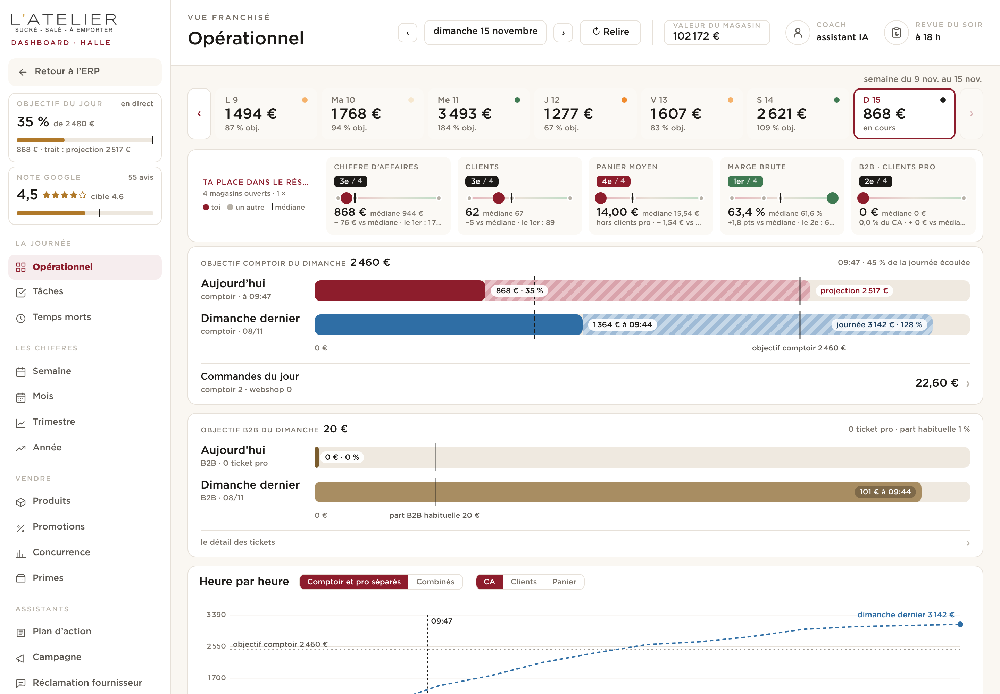
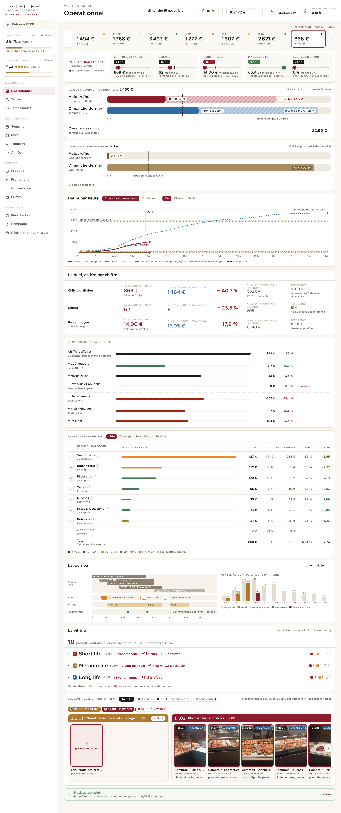
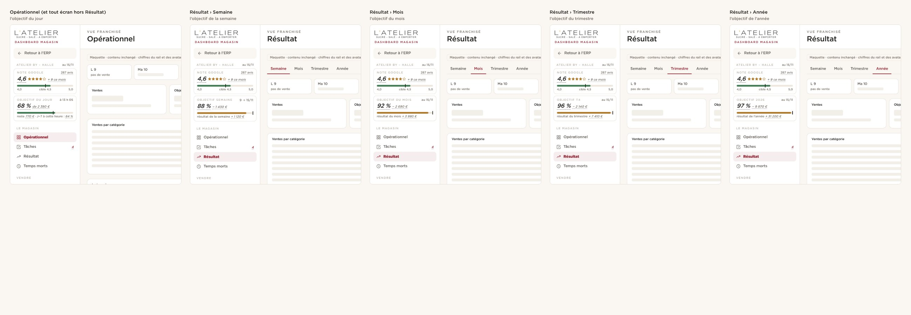
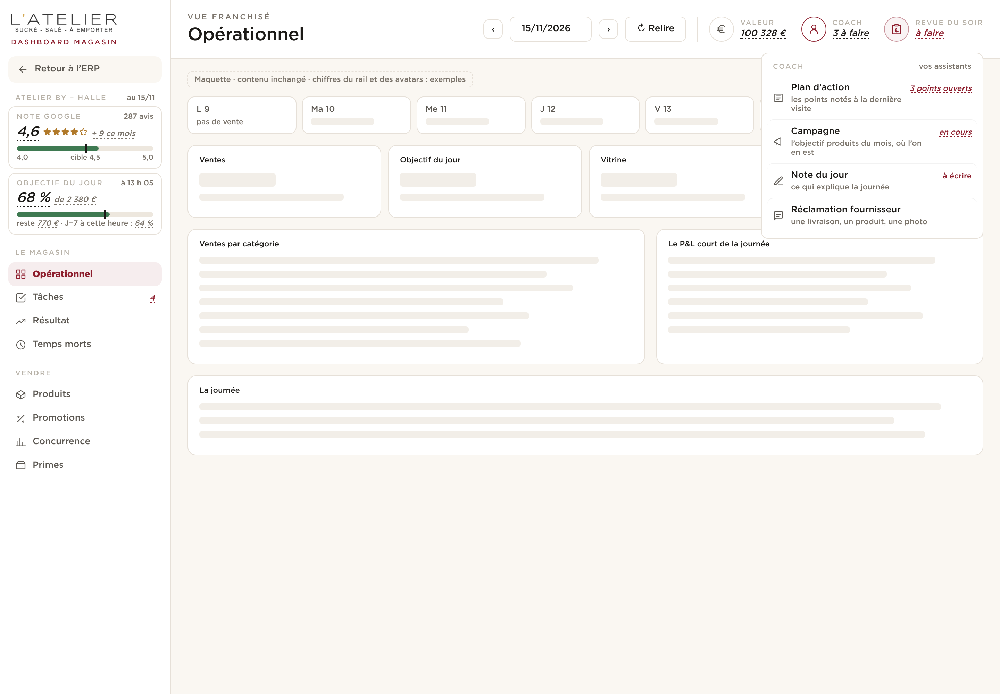
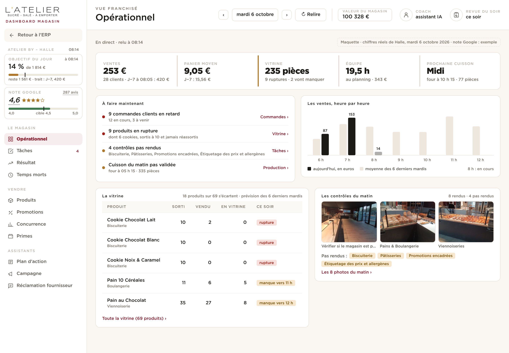
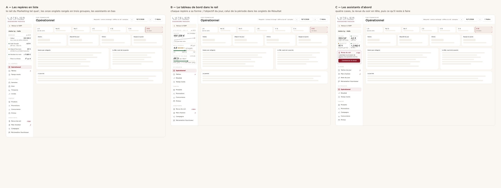
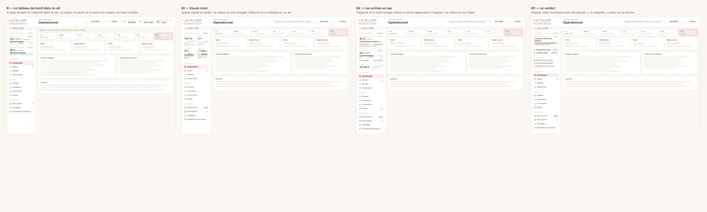

Le vrai dashboard, avec un rail à côté la demande en cours
« Ne pas changer ce qui était dans le dashboard, je veux juste un rail à côté. » La page fait tourner le vrai code du dashboard, sans une ligne changée.
- L’en-tête et la rangée d’onglets du dashboard laissent la place au rail : les mêmes onglets, dans le même ordre, en groupes (La journée, Les chiffres, Vendre), plus les assistants.
- La barre du haut reprend la date, « Relire », la valeur en vignette, la revue du soir, et le coach (l’assistant IA).
- En haut du rail : l’objectif du jour et la note Google.
- Tout le reste est le dashboard tel qu’il est.
Chiffres réels : Halle, dimanche 15 novembre 2026 à 09:46, lus au cockpit (lecture seule). Les prénoms de l’équipe sont remplacés par « Personne A », « Personne B »…


B : l’objectif selon l’onglet, et le coach
L’objectif du jour partout ; celui de la semaine, du mois, du trimestre ou de l’année dans l’onglet correspondant. Le coach est l’assistant IA : il lit les chiffres du magasin, cite d’où vient chacun, propose et n’écrit rien.



La version propre écartée : elle changeait le contenu
Le contenu de l’Opérationnel redessiné, minimaliste, avec les chiffres réels de Halle (mardi 6 octobre 2026, 08:14). Écartée le 15/11/2026 : le dashboard ne change pas, seul le rail s’ajoute.

Les propositions
Les trois premières (A, B, C), puis trois variantes de B.

